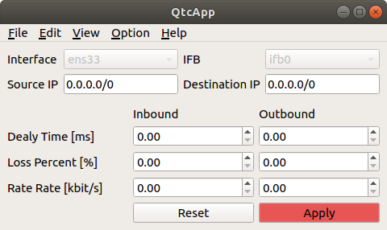

設定の反映と解除¶
ここでは、設定の反映と解除の仕方を説明します。
設定の反映¶
Qtcappのメインウィンドウでは以下のパラメータを設定できます。
| パラメータ | デフォルト値 | 単位 | 意味 |
|---|---|---|---|
| Interface | - | - | 設定を適用するインタフェース（送信側）を指定します。使用している計算機のLANアダプタが自動でコンボボックスに登録されています。 |
| IFB | ifb0 | - | 設定を適用するインタフェース（受信側）を指定します。通常は変更する必要はありません。 |
| Source IP | 0.0.0.0 | - | パケットの送信元を限定する際のIPアドレスを指定します。 |
| Destination IP | 0.0.0.0 | - | パケットの送信先を限定する際のIPアドレスを指定します。 |
| Inbound Delay Time | 0 | ms | パケットを受信する際の遅延時間を指定します。 |
| Inbound Rate Rate | 0 | kbits | パケットを受信する際のレイテンシ（通信速度の上限）を指定します。 |
| Inbound Loss Percent | 0 | % | パケットを受信する際のパケット損失率を指定します。 |
| Outbound Delay Time | 0 | ms | パケットを送信する際の遅延時間を指定します。 |
| Outbound Rate Rate | 0 | kbits | パケットを送信する際のレイテンシ（通信速度の上限）を指定します。 |
| Outbound Loss Percent | 0 | % | パケットを送信する際のパケット損失率を指定します。 |
- 上記のパラメータやネットワークエミュレーションの詳細については、以下のページを参照してください。
設定を入力し、“Apply”ボタンを押すと、設定が反映されます。設定が反映されている間は、ボタンの色が以下の図のように赤色になります。
設定の解除¶
“Apply”ボタンをもう１度押すと、設定が解除されます。